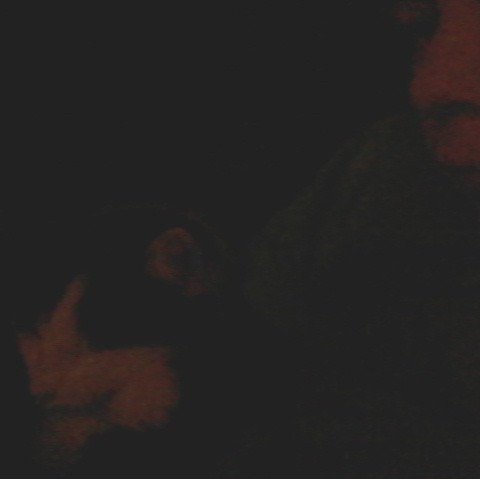

Aaron heeft alleen een facebook pagina waar op staat dat hij is geboren op
23 Januari 2002
en woont in Nuth.
Voor de rest heeft hij geen social media zoals twitter, instagram en snapchat.
dus daarom was het ook
moeilijk om info te vinden.
Links staat een foto die op zijn facebook staat en rechts is een link naar de
facebook pagina.

